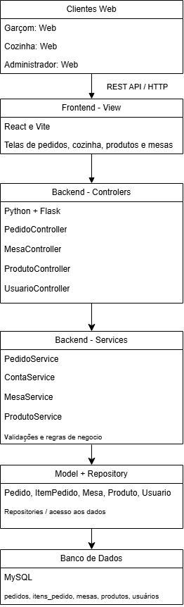
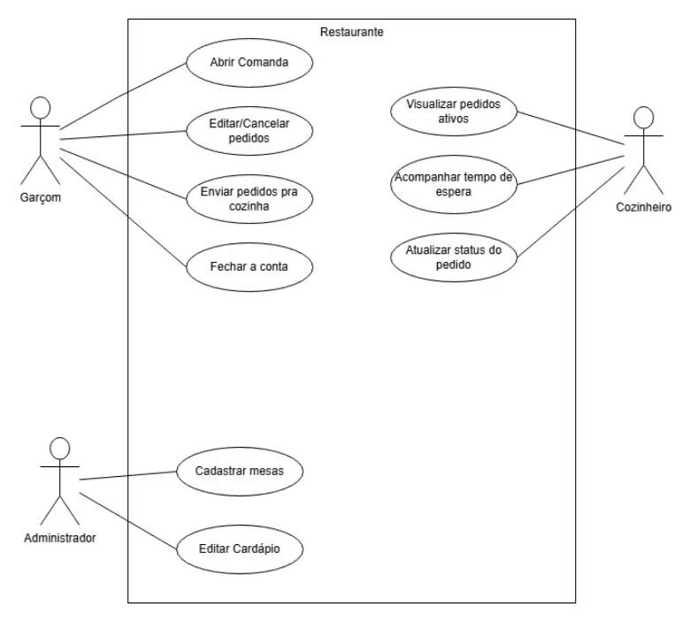
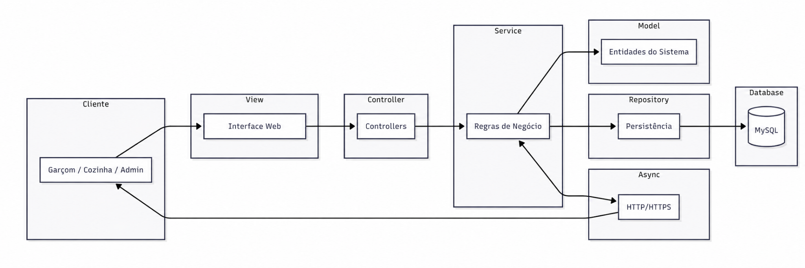
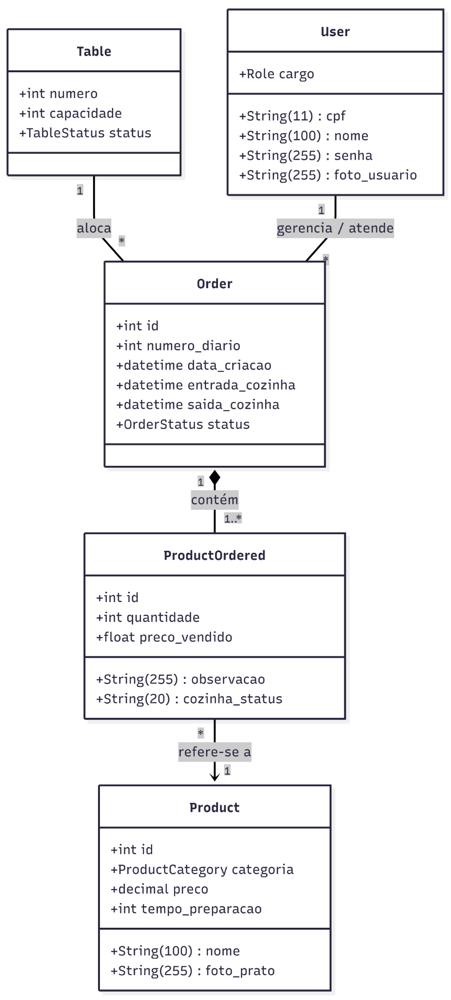
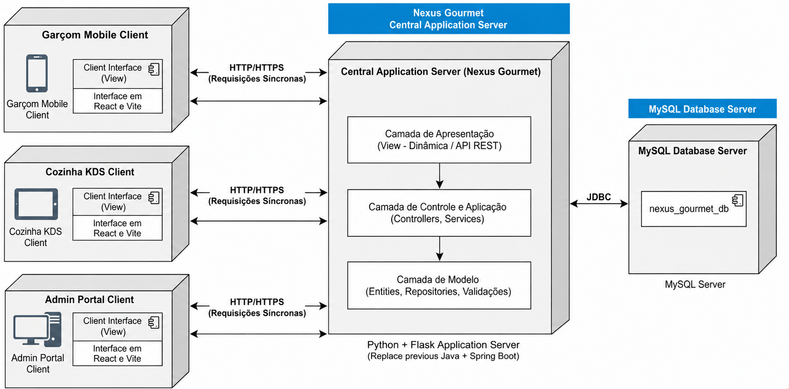

Documento de Arquitetura
Versão 1.4
Integrantes do Grupo
| Matrícula | Nome | Função (responsabilidade) | Pontos de participação |
|---|---|---|---|
| 242004457 | Alexandre Henrique Almeida Valadares Sousa | Banco de dados | 10 |
| 242028655 | Davi Kenichi Watanabe Sakai | Frontend | 10 |
| 241025953 | Igor Lima Carneiro | Backend | 10 |
| 242005329 | Jhonatan William Araújo de Almeida | Banco de dados | 10 |
| 242015432 | João Gabriel Rolim Veiga | Backend | 10 |
| 241039322 | João Paulo Jacomini Batista | Frontend | 10 |
| 241039304 | João Victor Amorim Kurihara | Frontend | 10 |
| 242024253 | Lucas Ferreira Santana | Backend | 10 |
| 242024271 | Lucas Peixoto Rodrigues | Backend | 10 |
| 242005006 | Rafael de Aquino Marinho | Frontend/MkDocs | 10 |
Histórico de Revisões
| Data | Versão | Descrição | Autor(es) |
|---|---|---|---|
| 14/05/2026 | 1.0 | Primeira versão do documento que define a arquitetura usada no produto | Grupo Dijkstra |
| 02/06/2026 | 1.1 | Adicionado menções diretas no corpo do documento às fontes bibliográficas usadas | Grupo Dijkstra |
| 28/06/2026 | 1.2 | Melhorando Explicação Figuras e diagramas | Rafael |
| 29/06/2026 | 1.3 | Atualização para refletir a implementação real (MySQL, estrutura de pastas, serviços/controladores, remoção do WebSocket) | Rafael |
| 30/06/2026 | 1.4 | Atualização dos diagramas e tabelas | João Kurihara |
Sumário
- 1 Introdução
- 1.1 Propósito
- 1.2 Escopo
- 2 Representação Arquitetural
- 2.1 Definições
- 2.2 Justifique sua escolha
- 2.3 Detalhamento
- 2.4 Metas e restrições arquiteturais
- 2.5 Visões
- 2.6 Visão de Implantação
- 2.7 Restrições adicionais
- 3 Bibliografia
1. Introdução
1.1 Propósito
Este documento descreve a arquitetura do sistema sendo desenvolvido pelo grupo Dijkstra, na disciplina de MDS – Métodos de Desenvolvimento de Software – edição do primeiro semestre de 2026, para o sistema Nexus Gourmet, a fim de fornecer uma visão abrangente do sistema para desenvolvedores, testadores e demais interessados em aspectos relacionados às tecnologias a serem usadas no desenvolvimento.
1.2 Escopo
O detalhamento do escopo se encontra no documento de arquitetura, este, juntamente com o documento de Visão do produto e do projeto. Porém, em linhas gerais o escopo do produto compreende o desenvolvimento de um software capaz de registrar e organizar pedidos em restaurantes, como apresentado mais detalhadamente na tabela 1 a seguir:
Tabela 1 - Funcionalidades presentes e não presentes
| O que ele faz | O que ele não faz |
|---|---|
| Abrir pedido para mesa | Compra e venda de produtos |
| Adicionar item à comanda | Adicionar conta de consumidor |
| Remover item da comanda | Permitir acesso direto de consumidores |
| Enviar pedido para a cozinha | |
| Visualizar pedidos na cozinha | |
| Visualizar tempo de espera | |
| Atualizar status da comanda | |
| Fechar conta | |
| Calcular total da comanda | |
| Visualizar mesas | |
| Cadastrar comanda | |
| Editar comanda | |
| Gerenciamento de Usuário |
Fonte: elaborado pelo autor (2026)
2. Representação Arquitetural
2.1 Definições
O sistema Nexus Gourmet seguirá uma arquitetura Cliente-Servidor Web, organizada internamente segundo o padrão MVC em camadas, com apoio de comunicação assíncrona para atualização do status dos pedidos (SERRANO, 2026).
A escolha da arquitetura Cliente-Servidor ocorre porque o sistema será acessado por diferentes tipos de clientes, como dispositivos móveis utilizados pelos garçons, telas utilizadas pela cozinha e interfaces administrativas (IBM, 2026). Esses clientes consomem os serviços oferecidos por uma aplicação central, responsável por processar as regras de negócio, controlar o fluxo dos pedidos e acessar o banco de dados.
Internamente, o servidor é organizado segundo o padrão MVC (Model-View-Controller). Nesse modelo:
- View: interfaces do sistema (desenvolvidas em React ou templates HTML).
- Controller: recebe as requisições dos usuários e coordena o fluxo das operações.
- Model: representa os dados, regras de negócio e persistência relacionados a pedidos, mesas, produtos, usuários e status de atendimento.
A comunicação entre as camadas é feita via API REST sobre HTTP/HTTPS, com todas as requisições sendo síncronas.
2.2 Justifique sua escolha
A escolha da arquitetura Cliente-Servidor Web com organização interna MVC é adequada ao Nexus Gourmet porque o produto proposto não é um sistema isolado em uma única máquina, mas uma aplicação distribuída entre diferentes usuários e dispositivos. O documento de Visão do Produto define o Nexus Gourmet como uma aplicação web-mobile voltada a proprietários e funcionários de restaurantes, com a finalidade de registrar, acompanhar e gerenciar pedidos de forma centralizada, ágil e sem erros.
O problema central identificado no projeto está relacionado à falha de comunicação entre salão e cozinha, à perda de informações em comandas de papel e à falta de rastreabilidade dos pedidos. Por isso, a arquitetura precisa favorecer a centralização das informações, o acesso simultâneo por múltiplos perfis de usuário e a atualização rápida do estado dos pedidos. A organização Cliente-Servidor atende diretamente a essa necessidade, pois separa os dispositivos consumidores dos serviços da aplicação central, mantendo o processamento e os dados em um servidor comum.
Essa escolha é adequada ao Nexus Gourmet porque o sistema possui características típicas de uma aplicação distribuída e modular, na qual diferentes usuários interagem simultaneamente com uma aplicação centralizada. O modelo Cliente-Servidor permite separar claramente os dispositivos de acesso da camada responsável pelo processamento das regras de negócio e armazenamento dos dados, favorecendo a organização, controle e sincronização das operações realizadas no restaurante.
No contexto do Nexus Gourmet, essa separação é importante porque o sistema será utilizado por diferentes perfis, como garçons, cozinha e administradores, cada um acessando funcionalidades específicas por meio de navegadores ou dispositivos conectados à aplicação principal. Dessa forma, a centralização do processamento e das informações garante maior consistência no gerenciamento de pedidos, mesas, produtos e status de atendimento.
Para complementar essa estrutura, o sistema adotará o padrão MVC (Model-View-Controller) como organização interna da aplicação. Essa abordagem favorece a separação de responsabilidades entre interface, controle do fluxo da aplicação e manipulação dos dados, tornando o sistema mais organizado e compreensível.
A camada View será responsável pela interação com os usuários, apresentando telas e funcionalidades voltadas ao gerenciamento dos pedidos e operações do restaurante. A camada Controller coordenará o fluxo das requisições e regras de negócio, intermediando a comunicação entre interface e persistência. Já a camada Model concentrará as entidades e dados relacionados ao domínio do sistema, como pedidos, mesas, produtos e usuários.
Essa organização contribui diretamente para a manutenção e evolução do software, reduzindo o acoplamento entre partes do sistema e facilitando alterações futuras sem impacto excessivo em outros módulos. Além disso, a divisão clara das responsabilidades melhora o desenvolvimento paralelo entre as equipes de frontend, backend e banco de dados, permitindo maior produtividade e facilidade de integração.
Outro fator relevante é a necessidade de atualização rápida das informações entre salão e cozinha. Como o sistema exige acompanhamento contínuo dos pedidos e alteração dinâmica de status, a arquitetura adota comunicação síncrona via HTTP para garantir a consistência dos dados em tempo real, com atualizações refletidas após cada requisição.
Assim, a combinação entre Cliente-Servidor e MVC oferece uma solução adequada às necessidades funcionais e estruturais do Nexus Gourmet, equilibrando organização, modularidade, manutenção, escalabilidade e eficiência operacional.
2.3 Detalhamento
A arquitetura proposta pode ser representada em quatro partes principais:
- Clientes Web - Representam os dispositivos usados pelos perfis do sistema:
- Garçom: abre pedidos, adiciona/remove itens, envia pedidos para a cozinha e fecha contas.
- Cozinha: visualiza pedidos ativos, acompanha tempo de espera e atualiza status.
-
Administrador: cadastra e edita produtos, mesas e demais dados necessários à operação.
-
Camada de Apresentação - View
-
Corresponde às páginas e interfaces desenvolvidas em React (ou templates HTML). Essa camada é responsável por apresentar as telas ao usuário e capturar suas ações, como clicar em "enviar pedido", "adicionar item" ou "marcar como pronto".
-
Camada de Controle e Aplicação - Controller/Service
- Corresponde ao backend da aplicação, desenvolvido em Python com Flask e SQLAlchemy.
- Os controladores (
order_controller,product_controller,user_controller) recebem as requisições HTTP e orquestram as ações. - Os serviços (
order_service,product_service,user_service,mesa_service) contêm as regras de negócio, validações e cálculos. -
A padronização de respostas da API é feita por meio de mensagens de erro e sucesso centralizadas.
-
Camada de Modelo e Persistência - Model/Database
- Representa os dados e regras centrais do sistema.
- As entidades principais (User, Table, Product, Order, ItemOrdered) estão definidas no arquivo
models/models.py. - Os valores enumerados (cargos, status, categorias) estão no arquivo
models/enums.py. - Não há uma camada explícita de Repository; o acesso ao banco de dados é realizado diretamente pelos serviços, utilizando SQLAlchemy.
- O banco de dados utilizado é MySQL, conforme script
database.sql.
Figura 1 - estilo arquitectural

Fonte: elaborado pelos autores (2026)
O fluxo principal começa quando o garçom acessa a interface web/mobile e registra um pedido vinculado a uma mesa. A View envia a solicitação ao Controller por meio de HTTP/HTTPS. O Controller aciona o Service correspondente, que valida as regras de negócio, como existência da mesa, disponibilidade do produto e cálculo dos valores. Em seguida, o Service persiste os dados no banco MySQL via SQLAlchemy.
Quando o pedido é enviado para a cozinha, o sistema altera seu status e disponibiliza essa alteração para a tela da cozinha. As atualizações de status são realizadas por requisições HTTP, que refletem as mudanças após o recarregamento da página ou por meio de polling periódico.
Quando o cozinheiro altera o status do pedido para "em preparo" ou "pronto", o fluxo ocorre no sentido inverso: a View da cozinha envia a atualização ao Controller, o Service valida a mudança de estado e o banco de dados é atualizado. A interface do garçom pode então visualizar o novo status do pedido após recarregar a página.
Tabela 2 - Responsabilidades por camada
| Elemento | Responsabilidade no Nexus Gourmet |
|---|---|
| Cliente Web | Permitir interação dos usuários com o sistema em diferentes dispositivos |
| View | Exibir telas, formulários, botões, listas de pedidos, mesas e produtos |
| Controller | Receber requisições, coordenar o fluxo e encaminhar ações aos serviços |
| Service | Aplicar regras de negócio, validações e cálculos |
| Model | Representar as entidades principais do domínio |
| Repository | Isolar o acesso ao banco de dados |
| Banco de Dados | Persistir pedidos, produtos, mesas, usuários e histórico de status |
| Comunicação assíncrona | Atualizar cozinha e salão quando houver mudança relevante no pedido |
Fonte: elaborado pelos autores (2026)
2.4 Metas e restrições arquiteturais
Esta seção define metas e restrições arquiteturais que o sistema deve seguir.
-
Desempenho de Interface: As atualizações de status de um pedido devem ser refletidas na tela da cozinha em tempo próximo ao real, utilizando requisições HTTP síncronas para refletir as mudanças de status.
-
Confiabilidade de Dados: O sistema deve garantir a persistência dos pedidos mesmo em cenários de queda momentânea da internet. Para isso, a camada de apresentação (View) deve implementar mecanismos de armazenamento local temporário (cache/LocalStorage) até que a rota da API no backend (Flask) esteja disponível para consolidar os dados no banco MySQL.
-
Restrições de Rede: O software deve ser otimizado para operar prioritariamente sob a infraestrutura de rede local (Wi-Fi) do restaurante, minimizando requisições externas supérfluas para garantir que o tempo de tráfego de dados do salão até o sistema KDS (Kitchen Display System) da cozinha seja imperceptível ao usuário.
-
Escalabilidade e Concorrência: O sistema deve ser capaz de suportar o acesso simultâneo de ao menos 15 usuários logados (entre garçons e cozinheiros), garantindo a estabilidade e a sincronização dos dados em tempo real.
-
Restrição de Segurança/Acesso: É obrigatória a identificação (login) de qualquer funcionário para que o sistema permita a realização de operações de pedido. A autenticação é gerenciada pelo
user_service, utilizando sessões Flask. -
Usabilidade Física: Devido ao contexto dos garçons, o design da interface no dispositivo móvel tem a meta de possibilitar a operação e uso com apenas uma das mãos.
-
Métrica de Qualidade de Código: O sistema adota como meta técnica manter uma densidade de defeitos máxima de (0,5\%) (erros por mil linhas de código - KLOC) mensurada durante a execução dos testes unitários e de integração na branch de homologação.
2.5 Visões
2.5.1 Visão de uso (o escopo do sistema)
O escopo do sistema Nexus Gourmet abrange o desenvolvimento de uma aplicação distribuída, com interfaces web e mobile, destinada à centralização e otimização do registro e gerenciamento de pedidos em ambientes gastronômicos. O fluxo operacional da aplicação engloba o ciclo completo do atendimento: a abertura da mesa e a inserção de itens pelo garçom; o envio simultâneo do pedido para a interface da cozinha, o monitoramento do tempo de preparo e a atualização de status ("em preparo" ou "pronto") pela equipe de cozinheiros, e, por fim, o encerramento da conta da mesa.
A definição do estilo arquitetural Cliente-Servidor Web, aliada ao padrão estrutural Model-View-Controller (MVC), foi fundamentada primordialmente nos requisitos operacionais do ambiente de implantação. A necessidade de mitigar falhas de comunicação históricas entre o salão e a cozinha exigiu uma arquitetura que garantisse a centralização das informações e o acesso simultâneo. Adicionalmente, a pluralidade de perfis de acesso sistêmico caracterizada pelo uso de dispositivos móveis pelos garçons, telas ou tablets na cozinha e interfaces web exclusivas para a administração justificou a separação lógica das interfaces gráficas (camada View) do processamento das regras de negócio e da persistência de dados.
Figura 2 - Diagrama de Casos de Uso

Fonte: Elaborado pelos autores (2026)
As mudanças de status são refletidas após recarregamento manual ou por meio de polling periódico, garantindo a consistência das informações.
2.5.2 Visão de organização lógica
O sistema é subdividido nos seguintes módulos, conforme implementado:
- Módulo de Apresentação (View):
- Composição: Desenvolvido com React (ou templates HTML).
-
Razão Lógica: Responsável unicamente pela interface com o usuário, apresentando as diferentes telas (mobile para garçom, desktop para cozinha) e capturando ações como "enviar pedido" ou "marcar como pronto".
-
Módulo de Controle e Serviços (Controller/Service):
- Composição: Desenvolvido em linguagem Python utilizando o framework Flask, com auxílio do SQLAlchemy.
- Controladores:
order_controller,product_controller,user_controller- recebem as requisições e orquestram as ações. - Serviços:
order_service,product_service,user_service,mesa_service- contêm as regras de negócio, validações e cálculos. -
Razão Lógica: Coordenam todo o fluxo da aplicação, recebem as requisições das telas, efetuam validações, aplicam regras de negócio (cálculos de contas, existência da mesa) e determinam as ações para persistência.
-
Módulo de Modelo e Persistência (Model/Database):
- Composição: Composto pelas entidades fundamentais do sistema (arquivo
models/models.py), pelos enums (models/enums.py) e pelo banco de dados MySQL (scriptdatabase.sql). - Razão Lógica: Modela o domínio (User, Table, Product, Order, ItemOrdered) e garante a integridade e persistência física dos dados, utilizando SQLAlchemy para abstração do banco.
Como eles se comunicam (Interfaces):
A camada de Apresentação (View) comunica-se com os Controladores (backend) através de API REST utilizando o protocolo HTTP/HTTPS. Atualmente, a comunicação entre as camadas é feita exclusivamente via requisições HTTP síncronas.
Internamente, o Controller utiliza a camada de Service (regras de negócio) para se comunicar de maneira contínua com o Model (SQLAlchemy), que por sua vez persiste e consulta as informações diretamente no banco de dados MySQL.
Figura 3 - Diagrama de Pacotes

Fonte: Elaborado pelos autores (2026)
2.5.3 Visão estrutural
Figura 4 - Diagrama de Classes

Fonte: Elaborado pelos autores (2026)
A Figura 4 ilustra o Diagrama de Classes, delimitando o escopo do produto e as interações entre os atores externos e as funcionalidades do sistema.
Detalhamento dos Atores e Interações:
-
Atores Primários: O diagrama identifica três perfis distintos com responsabilidades segregadas: Administrador, Garçom e Cozinheiro. Essa separação é refletida na arquitetura de segurança e controle de acesso do sistema, implementada via
user_serviceeenums.py. -
Gestão de Pedidos (Garçom/Cozinheiro): O núcleo operacional do sistema é representado pelos casos de uso "Fazer pedido", "Visualizar pedidos" e "Atualizar status do pedido". A interação entre esses atores através do sistema mitiga falhas de comunicação e agiliza o tempo de atendimento.
-
Gestão Administrativa (Administrador): O ator administrador possui permissões exclusivas para a manutenção do ecossistema, incluindo "Gerenciar mesas", "Gerenciar produtos" e "Gerenciar usuários", garantindo a integridade dos dados cadastrais utilizados nas operações de salão.
-
Fechamento de Ciclo: O caso de uso "Fechar conta" encerra o fluxo operacional, integrando as seleções feitas pelo garçom com o cálculo financeiro final, conforme as regras de negócio estabelecidas.
Relevância Arquitetural:
O mapeamento da Figura 4 serve como base para a definição das rotas da API no backend e para a construção das interfaces no frontend. Cada caso de uso representado foi priorizado para atender aos requisitos funcionais e garantir que a arquitetura lógica suporte a carga de trabalho simultânea de múltiplos atores.
2.6 Visão de Implantação
A visão de implantação descreve como os componentes do sistema serão distribuídos fisicamente nos ambientes operacionais do restaurante, evidenciando o modelo Cliente-Servidor adotado e os mecanismos de comunicação que garantem a sincronização em tempo real entre salão e cozinha. A Figura 5 ilustra essa topologia, destacando os principais nós de hardware, os papéis de cada dispositivo e os protocolos de rede utilizados.
2.6.1 Dispositivos Clientes
A aplicação atende três perfis de uso, cada um com dispositivos e interfaces específicas:
- Interface Mobile (Garçom):
Os garçons utilizam smartphones ou tablets com navegador web para acessar a interface otimizada para toque. O fluxo operacional inicia-se com a autenticação do usuário. Após o login, o garçom pode selecionar uma mesa, abrir uma comanda, adicionar ou remover itens e, por fim, enviar o pedido à cozinha. A ação "Confirmar/Enviar" dispara uma requisição HTTP para a API central, que registra o pedido e a cozinha visualiza a atualização após recarregar a página.
- Interface Desktop (Cozinha - KDS):
A cozinha utiliza um sistema de display (Kitchen Display System - KDS), normalmente executado em tablets ou monitores fixos. Essa interface exibe a lista de pedidos ativos, organizada por status ("em preparo" e "pronto"), com destaque para o tempo de espera de cada comanda. O cozinheiro interage com o sistema para marcar um pedido como "em preparo" ou "pronto", ações que atualizam o estado e são refletidas na interface do garçom (por recarregamento ou polling). Essa transição elimina a necessidade de comandas de papel e reduz a carga cognitiva da equipe.
- Interface Administrativa (Desktop/Web):
O administrador acessa uma interface web completa para gerenciar o cardápio (cadastro, edição e remoção de produtos) e configurar as mesas do salão. Esse perfil também pode gerenciar usuários e visualizar relatórios operacionais. O acesso é feito via navegador em computadores fixos ou notebooks.
2.6.2 Servidor de Aplicação
O servidor central hospeda a aplicação backend desenvolvida em Python com o framework Flask. Ele é responsável por:
- Processar as requisições REST provenientes dos clientes (autenticação, operações de comanda, gestão de produtos e mesas);
- Executar as regras de negócio (validações, cálculos de total, controle de fluxo de status) por meio dos serviços;
- Coordenar o acesso ao banco de dados via SQLAlchemy.
O servidor pode ser implantado em uma máquina dedicada na rede local do restaurante (para menor latência) ou em nuvem. A comunicação com os clientes é feita exclusivamente via protocolo HTTP/HTTPS.
2.6.3 Banco de Dados
O banco de dados utilizado é MySQL, conforme script database.sql. Ele persiste todas as informações do sistema:
- Dados cadastrais (produtos, mesas, usuários);
- Comandas e itens associados;
- Histórico de status e transações financeiras.
O banco é mantido em um servidor separado ou no mesmo servidor da aplicação, garantindo persistência e segurança.
2.6.4 Conectores e Protocolos
A comunicação entre os componentes segue os seguintes padrões:
- Cliente ↔ Servidor de Aplicação:
Requisições síncronas (abrir comanda, adicionar item, fechar conta, atualizar status) utilizam o protocolo HTTP/HTTPS com uma API RESTful.
- Servidor de Aplicação ↔ Banco de Dados:
A comunicação ocorre por meio do SQLAlchemy, que abstrai o driver MySQL (conexão TCP/IP com credenciais específicas).
Figura 5 - Diagrama de Implantação

Fonte: Elaborado pelos autores (2026)
A Figura 5 representa graficamente a topologia descrita. No lado esquerdo, vemos os clientes agrupados por perfil: smartphones/tablets dos garçons, displays da cozinha e computadores administrativos. Todos se conectam, via rede local ou internet, ao servidor de aplicação central, que está ligado ao banco de dados MySQL. As setas indicam os protocolos utilizados - HTTP/HTTPS para requisições síncronas. Essa arquitetura garante que o envio de um pedido pelo garçom seja registrado e disponibilizado para a cozinha, mantendo a equipe sincronizada.
2.7 Restrições adicionais
Esta seção detalha limitações e requisitos de qualidade que o sistema deve seguir.
- Aspectos negociais:
O software será acessível diretamente pela Internet e otimizado para a rede local do estabelecimento para evitar latência no envio de pedidos para cozinha. O produto exigirá obrigatoriamente a identificação e login do usuário (funcionário do restaurante) para qualquer operação de pedido. A autenticação é gerenciada pelo user_service, utilizando sessões Flask.
-
Características de Qualidade de Software:
-
Confiabilidade: Caso haja uma queda momentânea de conexão, o sistema não deve perder dados de pedidos. Para isso, a camada de apresentação pode implementar cache local (LocalStorage) para reenvio posterior.
- Usabilidade: A interface seguirá padrões de design que possibilitem o uso com apenas uma mão, no caso dos garçons, facilitando o trabalho deles.
3. Bibliografia
IBM. Modelo cliente/servidor. IBM Documentation, [s. d.]. Disponível em: https://www.ibm.com/docs/pt-br/cics-ts/5.6.0?topic=programs-clientserver-model. Acesso em: 14 maio 2026.
SERRANO, Milene. Arquitetura de Software: Visão Geral. [S.l.]: Engenharia de Software UnB/FGA, 2026. 1 arquivo (70 slides), PDF.